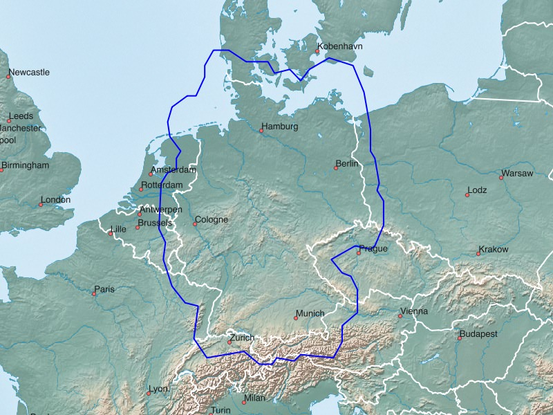
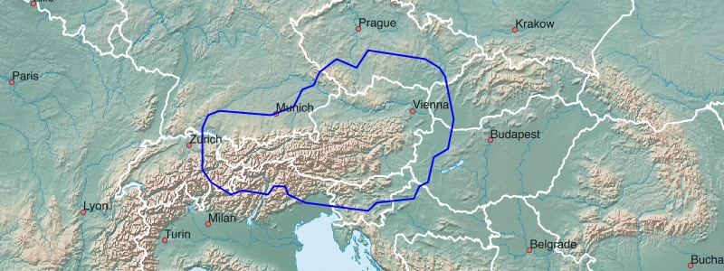
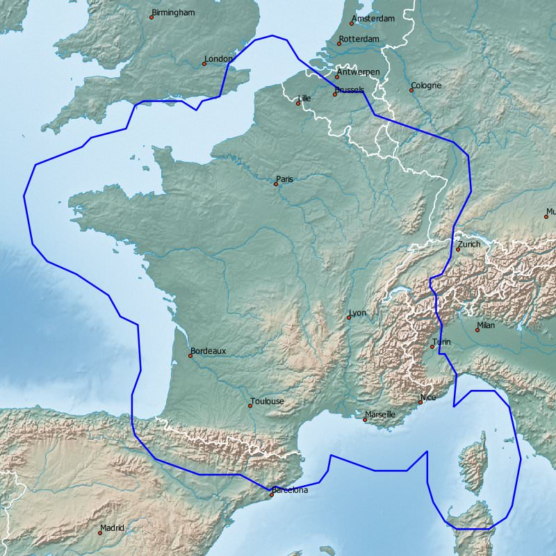
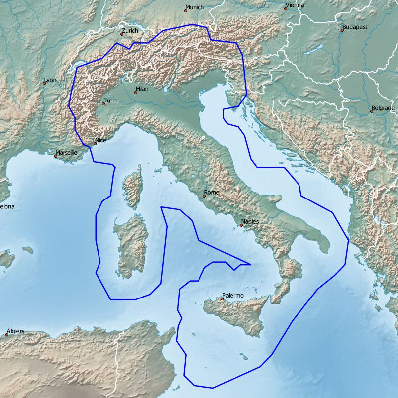
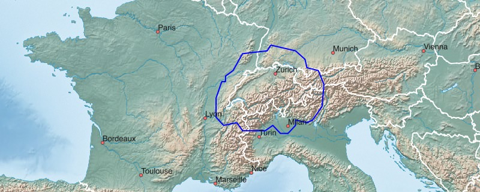

So called plus maps are available for Germany, Austria and Switzerland. Here, the map coverage is about 30-50 kilometer across national borders.

Germany+:
Garmin GPS-device: Germany+ - install image for micro SD card (1.9 GB)
Microsoft Windows: Germany+ - archive for Garmin BaseCamp (1.9 GB)
Apple Mac OS X: Germany+ - install archive for Garmin BaseCamp (1.9 GB)
All operating systems: Germany+ - image folder for QLandkarte (1.9 GB)

Austria+:
Garmin GPS-device: Austria+ - install image for micro SD card (0.6 GB)
Microsoft Windows: Austria+ - archive for Garmin BaseCamp (0.6 GB)
Apple Mac OS X: Austria+ - install archive for Garmin BaseCamp (0.6 GB)
All operating systems: Austria+ - image folder for QLandkarte (0.6 GB)

France+:
Garmin GPS-device: France+ - install image for micro SD card (1.7 GB)
Microsoft Windows: France+ - archive for Garmin BaseCamp (1.7 GB)
Apple Mac OS X: France+ - install archive for Garmin BaseCamp (1.7 GB)
All operating systems: France+ - image folder for QLandkarte (1.7 GB)

Italy+:
Garmin GPS-device: Italy+ - install image for micro SD card (0.9 GB)
Microsoft Windows: Italy+ - archive for Garmin BaseCamp (0.9 GB)
Apple Mac OS X: Italy+ - install archive for Garmin BaseCamp (0.9 GB)
All operating systems: Italy+ - image folder for QLandkarte (0.9 GB)

Switzerland+:
Garmin GPS-device: Switzerland+ - install image for micro SD card (0.5 GB)
Microsoft Windows: Switzerland+ - archive for Garmin BaseCamp (0.5 GB)
Apple Mac OS X: Switzerland+ - install archive for Garmin BaseCamp (0.5 GB)
All operating systems: Switzerland+ - image folder for QLandkarte (0.5 GB)
We wish you lots of fun with the Freizeitkarte maps ... and many interesting trips.